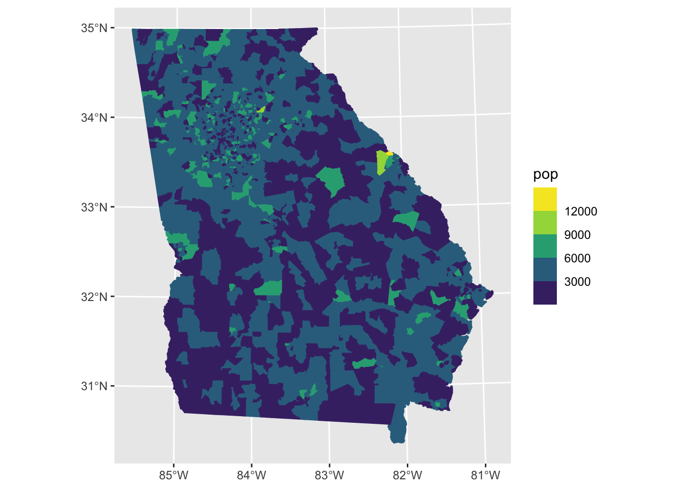
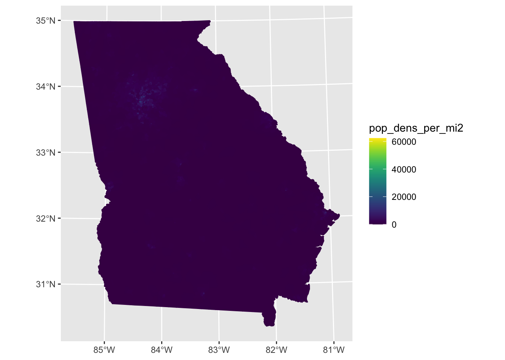
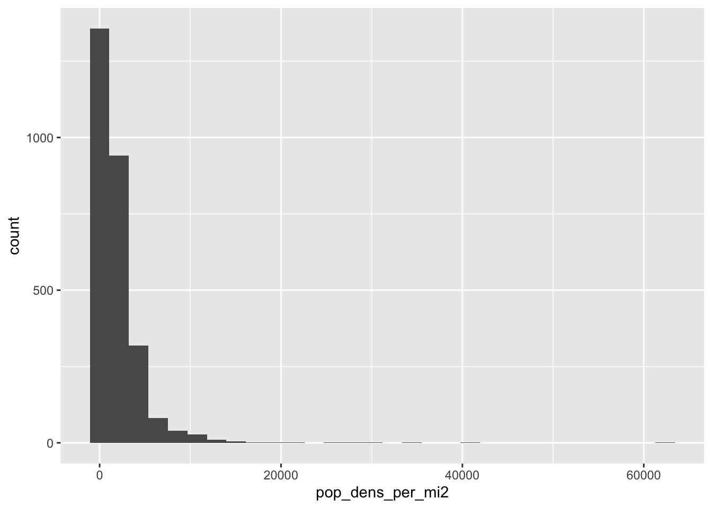
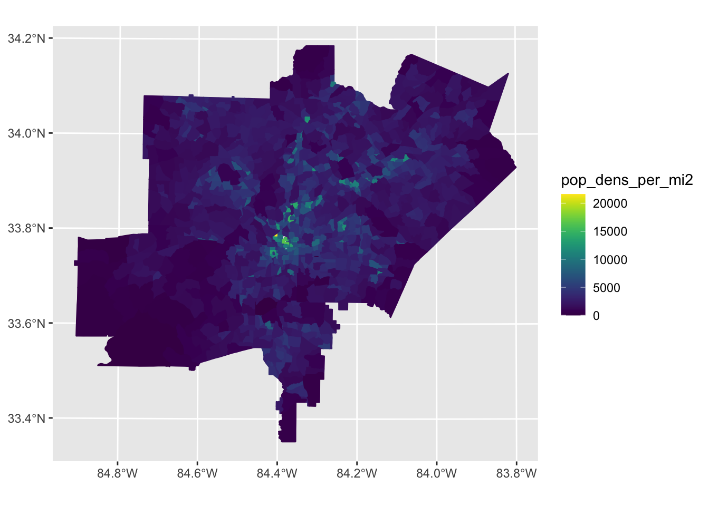
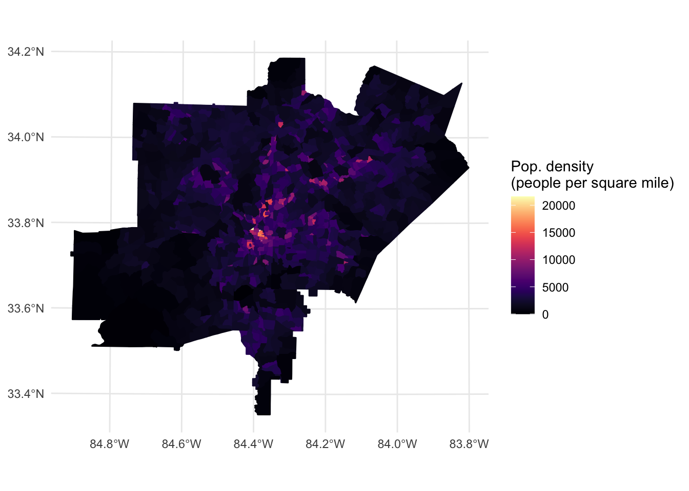
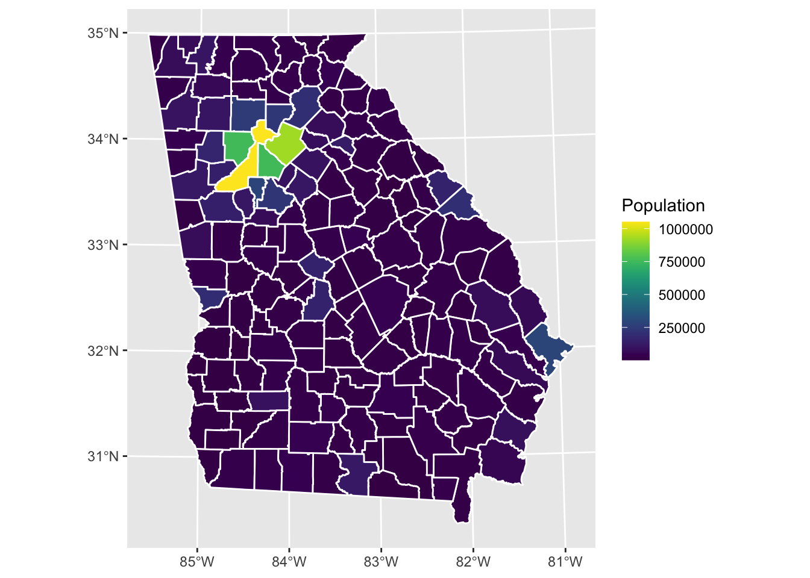

Outline of the different sf object types: https://r-spatial.github.io/sf/articles/sf1.html
point
linestring
polygon
multipoint
multilinestring
multipolygon
geometry collection - set of geomtries of any type
Overall goal: Illustrate use of sf through some example analyses using spatially referenced pharmacy data downloaded from OpenStreetMap and spatially referenced population data in the Atlanta area downloaded from the US Census.
Specifically:
Count the number of pharmacies in Fulton and Dekalb counties (Atlanta area), according to OpenStreetMap.
How many people live within 1/2 mile of these pharmacies in these counties?
How is residential proximity to a pharmacy distributed socioeconomically?
Miscellaneous methods used and things to note:
Note that dplyr and sf functions can be used in the same pipe.
Illustrate use of the st_area() function to measure area.
Illustrate use of st_union(), which smushes together multiple sf features into one single feature.
Similarly, we can dissolve (ArcGIS word) census tracts into counties using the group_by() and summarise() syntax from dplyr.
Illustrate use of st_intersection(), which returns the geometry covered by overlapping features.
Illustrate use of st_join(), which allows for a spatial left join.
Illustrate use of st_centroid(), which finds the centroid (weighted average middle) of an sf object.
Illustrate use of st_buffer() to create a buffer area around a polygon.
Background
I’d suggest reviewing all of the vignettes here:
https://r-spatial.github.io/sf/articles/sf1.html
https://r-spatial.github.io/sf/articles/sf2.html
https://r-spatial.github.io/sf/articles/sf3.html
https://r-spatial.github.io/sf/articles/sf4.html
#Packages needed for downloading data
install.packages("osmdata")
install.packages("tidycensus")
#Other packages used
install.packages("tidyverse") #always
install.packages("sf") #focus of session; spatial data wrangling
install.packages("mapview") #interactive mapping
install.packages("viridis") #for color scales.
install.packages("here") #working-directory managementlibrary(osmdata)
library(tidycensus)
library(tidyverse)
library(sf)
library(mapview)
library(viridis)
library(here)Note: throughout this code, I’m writing out packagename::function to be more clear of the package source, but that syntax is not necessary. That is, you could write get_acs() rather than tidycensus::get_acs() because no other loaded package uses that function.
This code chunk tells osmdata to save the geometry locally, which can speed up the process if you end up downloading it multiple times.
options(tigris_use_cache = TRUE) Load population data for all of Georgia’s census tracts based on American Community Survey estimates (2016-2020 5-year). Recall, we can search variable names using by:
vars_acs_2020 = load_variables(2020, "acs5", cache = TRUE)
View(vars_acs_2019) get_acs()tract_ga =tidycensus::get_acs(
year=2020,
#make it wide form (rather than long-form, default) so variable names are in columns
# https://cran.r-project.org/web/packages/tidycensus/tidycensus.pdf
output = "wide",
geography = "tract",
state ="GA",
geometry = TRUE, #omit geometry for speed
variables = c(
pop = "B01001_001")
)st_area(), st_transform()Here are our first sf functions. We measure the area of each census tract using sf::st_area(), and we go back and forth between coordinate reference systems (CRS) using sf::st_transform(). I typically use WGS84, a commonly used CRS, which has the EPSG code of 4326. The main practical consideration in deciding which CRS to use is its system of measurement (meters or feet).
Overview resources on coordinate reference systems:
List of coordinate reference systems:
https://www.spatialreference.org/ref - “bad gateway” - hopefully that resolves, as this page has a nice list of EPSG codes with output units (feet or meters)
Other topics in this code chunk:
FIPS codes:
stringr::str_sub() to extract a string by position.
tract_ga_wrangle = tract_ga %>%
dplyr::rename(
geo_id= GEOID,
name_tract_county = NAME,
pop = popE
) %>%
sf::st_transform(4326) %>% #
dplyr::mutate(
#Extract county 5-digit FIPS code
#first 2 digits of the FIPS code
#correspond to state. Then the next 3 indicate the county.
# Note Fulton is 13121
# Dekalb is 13089
#stringr is a tidyverse package
county_fips = stringr::str_sub(geo_id, start=1, 5),
area_4326 = sf::st_area(geometry), #returns area of type "units".
#measured in meters squared because of the coordinate system.
area_m2 = as.numeric(area_4326), #convert to numeric. strip units
#indicator for major Atlanta Metro Counties
atlanta_metro = case_when(
#character format even though they're numbers, so quote
county_fips %in% c(
"13121",#fulton
"13089",#dekalb
"13135",#gwinnett
"13067", #cobb
"13063", #clayton
"13097" #douglas
) ~1,
TRUE ~0)
) %>%
#For fun, convert it to a coordinate system that will output in feet.
#https://www.spatialreference.org/ref/epsg/2239/
#NAD83 / Georgia West (ftUS)
sf::st_transform(2240) %>%
dplyr::mutate(
area_2240 = sf::st_area(geometry), #square feet
area_ft2 = as.numeric(area_2240),
area_mi2 = area_ft2/27878400, #convert to square miles
#calculate population density
pop_dens_per_mi2 = pop/area_mi2
) %>%
#Remove the population margin of error
dplyr::select(-popM) Note that we could have included the above code as part of the one above it (i.e., where tract_ga was created) all in one pipe. That would have made the code a bit more concise. When downloading from an external source, though, it can be better to limit the number of times the you call on the external source, both for computing speed (it can take a while) and because some sources (e.g., OpenStreetMap) have limits on the number of times you can download in a short period of time, as it strains their resources. So, in this case, assuming we may have to re-run the wrangling steps a few times before we’ve made our final decision, we prioritize courtesy over brevity.
Take a look at the data:
tract_ga_wrangle## Simple feature collection with 2796 features and 11 fields (with 5 geometries empty)
## Geometry type: MULTIPOLYGON
## Dimension: XY
## Bounding box: xmin: 1865698 ymin: 135730 xmax: 3327905 ymax: 1821090
## Projected CRS: NAD83 / Georgia West (ftUS)
## First 10 features:
## geo_id name_tract_county pop county_fips
## 1 13101880100 Census Tract 8801, Echols County, Georgia 1486 13101
## 2 13185011100 Census Tract 111, Lowndes County, Georgia 3229 13185
## 3 13277960700 Census Tract 9607, Tift County, Georgia 4735 13277
## 4 13299950200 Census Tract 9502, Ware County, Georgia 7948 13299
## 5 13087970600 Census Tract 9706, Decatur County, Georgia 5649 13087
## 6 13095010500 Census Tract 105, Dougherty County, Georgia 1962 13095
## 7 13089021908 Census Tract 219.08, DeKalb County, Georgia 4829 13089
## 8 13089020400 Census Tract 204, DeKalb County, Georgia 2743 13089
## 9 13089023410 Census Tract 234.10, DeKalb County, Georgia 3903 13089
## 10 13051010601 Census Tract 106.01, Chatham County, Georgia 4182 13051
## area_4326 area_m2 atlanta_metro area_2240
## 1 875538524 [m^2] 875538524 0 9416742013 [US_survey_foot^2]
## 2 1953410 [m^2] 1953410 0 21005591 [US_survey_foot^2]
## 3 24582497 [m^2] 24582497 0 264352359 [US_survey_foot^2]
## 4 331278674 [m^2] 331278674 0 3564136476 [US_survey_foot^2]
## 5 39107954 [m^2] 39107954 0 420480485 [US_survey_foot^2]
## 6 25153201 [m^2] 25153201 0 270470479 [US_survey_foot^2]
## 7 3462981 [m^2] 3462981 1 37255224 [US_survey_foot^2]
## 8 1021595 [m^2] 1021595 1 10990443 [US_survey_foot^2]
## 9 3238562 [m^2] 3238562 1 34840255 [US_survey_foot^2]
## 10 5939994 [m^2] 5939994 0 64007603 [US_survey_foot^2]
## area_ft2 area_mi2 pop_dens_per_mi2 geometry
## 1 9416742013 337.7791413 4.399324 MULTIPOLYGON (((2645879 227...
## 2 21005591 0.7534719 4285.494865 MULTIPOLYGON (((2567702 313...
## 3 264352359 9.4823361 499.349521 MULTIPOLYGON (((2477474 537...
## 4 3564136476 127.8458045 62.168642 MULTIPOLYGON (((2754721 458...
## 5 420480485 15.0826620 374.536007 MULTIPOLYGON (((2168049 329...
## 6 270470479 9.7017935 202.230650 MULTIPOLYGON (((2273112 547...
## 7 37255224 1.3363473 3613.581609 MULTIPOLYGON (((2284578 138...
## 8 10990443 0.3942279 6957.904409 MULTIPOLYGON (((2241109 136...
## 9 34840255 1.2497222 3123.094127 MULTIPOLYGON (((2256695 135...
## 10 64007603 2.2959568 1821.462829 MULTIPOLYGON (((3225163 784...class(tract_ga_wrangle$area_4326) #note units## [1] "units"class(tract_ga_wrangle$area_m2) #numeric## [1] "numeric"class(tract_ga_wrangle$area_2240) #units## [1] "units"class(tract_ga_wrangle$area_ft) #numeric## [1] "numeric"Use the viridis palette, which is built into ggplot2:
https://cran.r-project.org/web/packages/viridis/vignettes/intro-to-viridis.html
https://ggplot2.tidyverse.org/reference/scale_viridis.html
Note ggplot2::scale_fill_viridis_b() automatically discretizes (breaks into groups) the color scale. The _b stands for bin for binning continuous data before the mapping.
tract_ga_wrangle %>%
ggplot2::ggplot(aes(fill = pop, color = pop))+
ggplot2::geom_sf()+
ggplot2::scale_fill_viridis_b()+ #fill color of the polygons
ggplot2::scale_colour_viridis_b() #line (border) color of the polygons
Here I’d like to keep the scale in continuous form rather than in bins, as above, so I’m going to use the palettes directly from viridis.
tract_ga_wrangle %>%
ggplot2::ggplot(aes(fill = pop_dens_per_mi2, color = pop_dens_per_mi2))+
ggplot2::geom_sf()+
#easier to see with a continuous scale rather than the breaks
viridis::scale_fill_viridis() +
viridis::scale_color_viridis()
Try filtering to Atlanta Metro Counties and removing very high-population-dense census tracts, which are skewing the scale. The scale rises linearly, but the vast majority of census tracts have low density, and a select few have high density, as the histogram shows:
tract_ga_wrangle %>%
ggplot2::ggplot(aes(pop_dens_per_mi2))+
geom_histogram()
tract_ga_wrangle %>%
filter(atlanta_metro==1) %>%
filter(pop_dens_per_mi2 <25000) %>%
ggplot2::ggplot(aes(fill = pop_dens_per_mi2, color = pop_dens_per_mi2))+
ggplot2::geom_sf()+
viridis::scale_fill_viridis() +
viridis::scale_color_viridis()
What about a different viridis color palette? And a nicer label for the legend? And can we make the coordinates look better?
Reference: http://www.cookbook-r.com/Graphs/Legends_(ggplot2)/
tract_ga_wrangle %>%
filter(atlanta_metro==1) %>%
filter(pop_dens_per_mi2 <25000) %>%
ggplot2::ggplot(aes(fill = pop_dens_per_mi2, color = pop_dens_per_mi2))+
ggplot2::geom_sf()+
#Write the same name in both, and it won't repeat.
#\n for line break (carriage return)
viridis::scale_fill_viridis(
option="magma",
name = "Pop. density \n(people per square mile)") +
viridis::scale_color_viridis(
option="magma",
name = "Pop. density \n(people per square mile)"
) +
theme_minimal()
Like a “dissolve” in ArcGIS
Summarize over county and keep geometry of counties. The “features” of the sf object will become counties rather than census tracts.
county_ga = tract_ga_wrangle %>%
dplyr::group_by(county_fips) %>%
#any summary operation (e.g., average, standard deviation) will do to collapse the geometry. sum makes sense here.
dplyr::summarise(pop= sum(pop, na.rm=TRUE)) %>%
dplyr::ungroup() %>% #so we're no longer doing grouped operations
sf::st_transform(2240) %>%
dplyr::mutate(
#Measure the area of each county
area_2240 = st_area(geometry),
area_ft2 = as.numeric(area_2240),
area_mi2 = area_ft2/27878400, #convert to square miles
pop_dens_per_mi2 = pop/area_mi2 #calculate population density
) Now, rather than keeping the lines and the fill the same color, I’m coloring the lines white so that they stand out more.
I’m using the continuous palette.
county_ga %>%
ggplot2::ggplot(aes(fill = pop))+
ggplot2::geom_sf(color = "white")+
viridis::scale_fill_viridis(name = "Population")
#Visualize population density
county_ga %>%
ggplot(aes(fill = pop_dens_per_mi2))+
geom_sf(color = "white")+
viridis::scale_fill_viridis(
option="magma",
name = "Pop. density \n(people per square mile)" ) +
theme_minimal()Copyright © 2022 Michael D. Garber